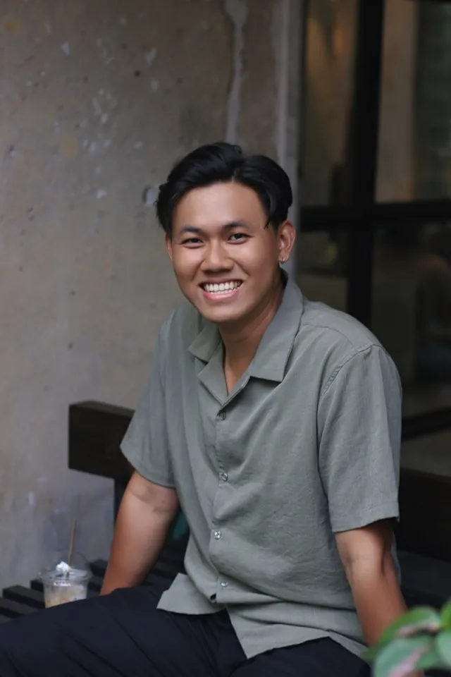

兵庫県宝塚市 / 整体・骨盤矯正
からだの根本から、
毎日をもっと楽に。
肩こり・腰痛・骨盤のゆがみ…その「なんとなく不調」を、
丁寧なカウンセリングと整体でひとつひとつ解消します。
1日6名の完全予約制で、ゆっくりと向き合います。
理念
「治す」ではなく
「整える」を大切に
症状だけを取り除くのではなく、不調の根本にある原因に向き合います。あなたのからだの声を聞き、自然に整う力を引き出すことが私たちのゴールです。
-
01
丁寧なカウンセリング
初回は30分かけて、生活習慣・姿勢・痛みの原因をじっくりとヒアリング。あなただけの施術プランを作ります。
-
02
骨格から整える施術
骨盤・背骨・関節のバランスを整えることで、根本的な不調の改善を目指します。強引に押すのではなく、自然な動きを促す優しい手技です。
-
03
再発しない体づくり
施術後のセルフケアや日常動作のアドバイスも大切にしています。通い続けなくても良い体を一緒に目指しましょう。
料金
メニュー・料金
すべてのメニューに初回カウンセリング（30分）が含まれます。初めての方も安心してご来院ください。
-
全身整体コース人気No.1
前身のバランスを整える基本コース/ 60分
通常料金
7,700
-
骨盤矯正コース
骨盤のゆがみに特化した施術 / 50分
通常料金
6,600
-
腰痛・肩こり集中ケア
気になる部位を重点的に / 40分
通常料金
5,500
-
初回体験コース初回限定
カウンセリング＋全身整体 / 70分
初回限定
3,980
お客様の声
施術を受けた方から
-
★★★★★
産後の骨盤ゆがみが気になって来院しました。丁寧なカウンセリングで原因を説明してもらえて、3回通ったら腰の重さがすっかり楽になりました。
30代 女性 / 産後ケア目的
-
★★★★★
デスクワークで長年悩んでいた肩こりと頭痛が、3回の施術で明らかに改善。セルフケアのアドバイスも実践しやすくて助かっています。
40代 男性 / 肩こり・頭痛改善
-
★★★★★
強くもみほぐされるのが苦手で整体が怖かったのですが、ここはとても優しい施術で安心できました。子連れでも対応していただけて嬉しかったです。
30代 女性 / 腰痛改善
院長紹介
心と体に向き合う
整体師として

田中誠一
SEIICHI TANAKA / 院長・整体師
もともと自身が慢性的な腰痛に悩んでいたことから、整体の世界に入りました。 「痛みをなくすだけでなく、その人らしい毎日を取り戻してほしい」という想いを大切に、一人ひとりと丁寧に向き合う施術を心がけています。
宝塚市出身。地域の皆さまの「かかりつけ整体師」を目指し、2018年に開院しました。お気軽にご相談ください。
- 柔道整復師（国家資格）
- 整体師養成学校 専門課程修了
- 盤矯正インストラクター認定
- 施術歴8年・累計1,200名以上
アクセス
ご来院方法
宝塚駅から徒歩7分。駐車場2台完備。
- 院名
- やすらぎ整体院
- 住所
- 兵庫県宝塚市栄町0-0 ヤスラギハイツ101
- 電話
- 0797-XX-XXXX
- 営業時間
- 平日 10:00 〜 20:00
土・日・祝 9:00 〜 18:00 - 定休日
- 水曜日
- アクセス
- 阪急宝塚線「宝塚駅」徒歩7分
駐車場2台あり（無料）
ご予約・お問い合わせ
ご予約はこちらから
お電話でのご予約
0797-XX-XXXX
受付時間 10:00〜19:00（水曜定休）